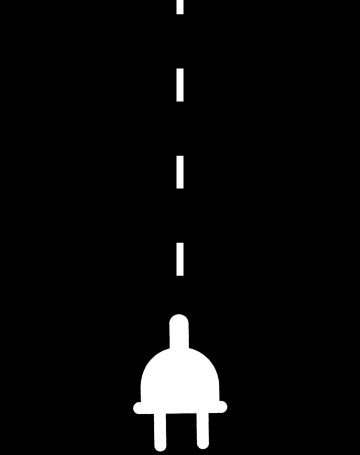

The United States is wholly dependent on electricity to function, yet the country's electrical grid is anything but dependable. According to the U.S. Department of Energy, blackouts have increased 64% since the early 2000s. Not only are power outage incidents happening more frequently, they are also growing in intensity, affecting more households for longer periods of time. When factoring in the number of homes impacted and the length of these disruptions, the scale of the crisis becomes even more alarming: between 2015 and 2023, the number of hours American households spent without power increased by an astonishing 170%.
Power outages are more than just a temporary inconvenience. When neighborhoods lose power, people lose lives. During heatwaves, blackouts drive up heat-related deaths, as homes with nonfunctional air conditioners are exposed to dangerously high temperatures. In the winter, outages often lead to a spike in carbon monoxide poisoning, as people turn to unsafe alternative heat sources like running their car in a closed garage. Even in milder weather, blackouts can put lives at risk, especially for those who depend on electrically powered medical devices. Beyond the immediate health threats, every prolonged outage brings significant economic and environmental costs—spoiled food, damaged electronics, and lost productivity.
Because utility companies are required to report all power outage incidents, as well as the number of customers affected, it is relatively easy to identify disruption patterns at the county level. The Department of Energy monitors blackouts across the country using the Environment for Analysis of Geo-Located Energy Information (EAGLE-I) system, a data visualization platform created by the Oak Ridge National Laboratory that records the number of individuals per county experiencing a power outage every 15 minutes. While EAGLE-I’s primary function is to provide emergency responders, utilities, and federal authorities with real-time updates on power outage situations, the system has also produced a set of massive datasets that track power outage incidents between 2015 and 2023 with an incredible level of granularity.

EAGLE-I’s county-level precision makes it clear that the increase in power outages is a nationwide trend. The above graph shows the historical data of the five counties that experienced the most in blackout hours in 2023. Of the five, only two are located in the same region of the country. Regardless of their location, each county spent millions of more hours in the dark in 2023 than in 2015.
The data is clear: the US has a serious power outage problem. In order to understand why blackouts are on the rise, we can zoom in on the county that experienced more hours of power outages in 2023 than anywhere else in the country: Wayne County, Michigan. 2023 was a whirlwind year for Wayne County (quite literally - the region endured multiple severe tornadoes). The region experienced 39,385,729 hours of power failures, including four major blackouts that impacted hundreds of thousands of households for multiple days in a row.

As climate change worsens, extreme weather events are escalating in severity, and power lines are paying the price. Wayne County is one of thousands across that US struggling to protect critical infrastructure like the electrical grid from increasingly frequent atmospheric assaults. Much of the nation’s grid was built in the ‘60s and ‘70s, so it was not designed to withstand modern, climate change-driven storms, which occur more often and cause significantly more damage. With global carbon emissions still rising, this crisis is only going to get worse. The increase in blackout hours over the past decade is a stark warning that our electrical grid is not prepared for what lies ahead. Federal, state, and local policymakers face a clear choice: modernize the grid for 21st century challenges or leave Americans in the dark.
All visualizations were programmed in R using nine blackout datasets from the Oak Ridge National Laboratory's EAGLE-I geographic information system, as well as a supplementary dataset with the number of electric customers per county. Coloring and labels were modified using Adobe Illustrator, and the site was programmed using HTML, CSS, and JavaScript.
Utility Trucks - New York Times
Icy Power Lines - Michigan Advance
Street Flood - MLive Michigan
Tornado Wreckage - MLive Michigan